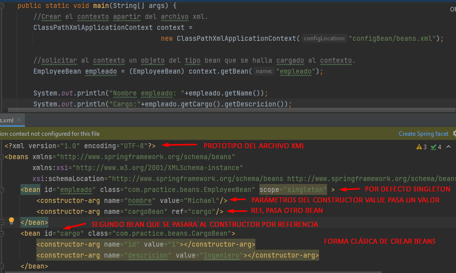

Spirng es un conjunto de tecnología que facilita el desarrollo y minimiza las configuraciones y creación de elementos para concentrar los esfuerzos del desarrollo en la lógica de negocio. La base de todas la tecnologías Spring es Spring Framework, Spring Data es para gestionar la conexión a BD, Spring boot es la implementación mas avanzada, se van agregando las tecnológias que se requieran en función de la necesidades del proyecto.
Toda la información y documenación se encuentra en la página oficial 'spring.io' y las dependencia se encuentran bajo el dominio 'org.spring'
El contexto clásico permite crear beans, se debe agregar cada bean manualmente, junto con la definición de parámetros de cada constructor, por defecto se crean de tipo singleton, lo que significa que cada vez que se pida un objeto al contexto devolverá el mismo. Esto ayuda en la optimización de recursos y se usa en escenarios donde no es necesario crear en repetidas ocaciones objetos diferentes. Utilizado en controladores, servicios ...
